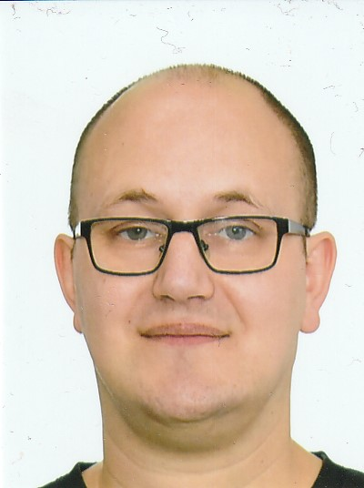

Steffen Christmann
Prospective Web Developer

Hobbys
Contact Me
Summary
I am a highly motivated, aspiring web developer, living in germany,
who has found his passion in coding. My goal is to be good enough
to find a job with my skills so that I can provide for my family
and spend more time with them.
Education
- Secondary school certificate
- from 1995 to 2001 -
At Integrated comprehensive school
- Completed vocational training as a painter/varnisher
- from 2002 to 2005 -
in the following companies
- DEKRA from 2002 to 2003
- FORSTER from 2003 to 2004
- JÖRG from 2004 to 2005
- Vocational baccalaureate diploma
- from 2011 to 2013 -
at Vocational school I - Technology
Work experience
- Basic military service -
from 01/2006 to 09/2006
- Regular soldier at NBC defense -
from 07/2007 to 07/2011
- Security personnel -
from 01/2015 to 05/2018
- Military police as civilian
for the U.S. Air Force -
from 05/2018 until now
Skills
- IT skills
- HTML - Basic knowledge
- Microsoft word - Basic knowledge
- Microsoft exel - Basic knowledge
- Language skills
- German - Native language
- English - language level B2